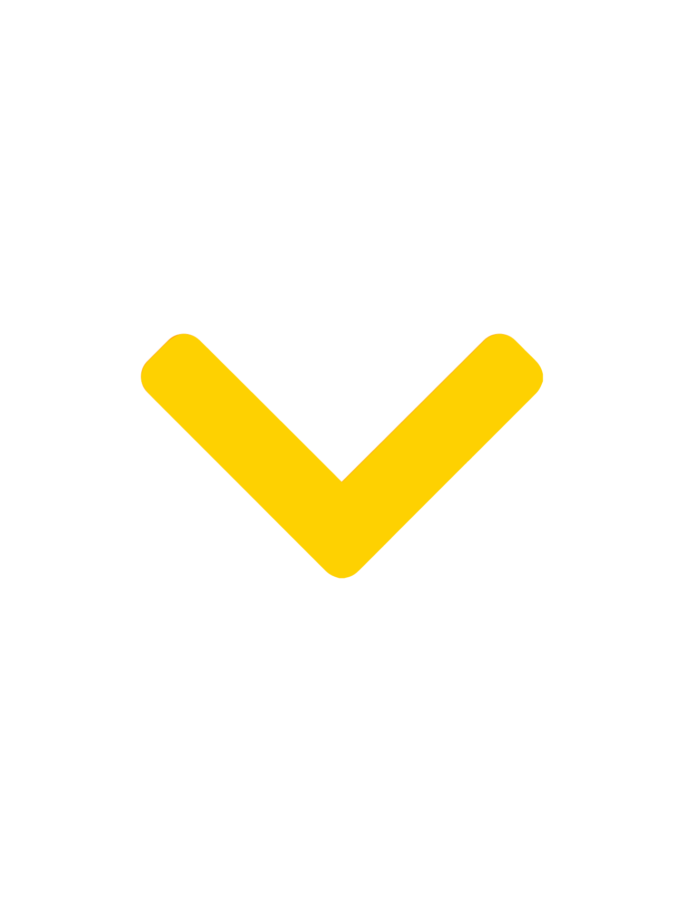

Om os

Vision
OseaN stræber efter at være frontløbere inden for grøn bæredygtig udvikling. Med vores innovative teknologi og tankegang, vil vi bidrage til en cirkulær bioøkonomi, hvor vi giver mere tilbage til kloden, end vi bruger af ressourcer. Derfor har vi som den første virksomhed i Danmark udviklet et kontrolleret landbaseret anlæg, hvor vi kan dyrke tang af højeste kvalitet året rundt, på klima- og miljøvenlig vis
Historien
Siden Esben var 9 år, har han søgt efter måder, hvorpå han kan være med til at beskytte og genoprette vores natur. Igennem sin opvækst ved en lille idyllisk by kaldet Rødebo, erfarede han, hvordan forureningen fra et tidligere imprægneringsfirma truede hans barndoms sø, Esrum Sø.


Teamet
Bag en god virksomhed står et stærkt team.
Hos OseaN har vi ikke blot et godt team men også stærke og handlekraftige samarbejdspartnere som vi kan takke for hvor vi står idag
Læs mere om teamet